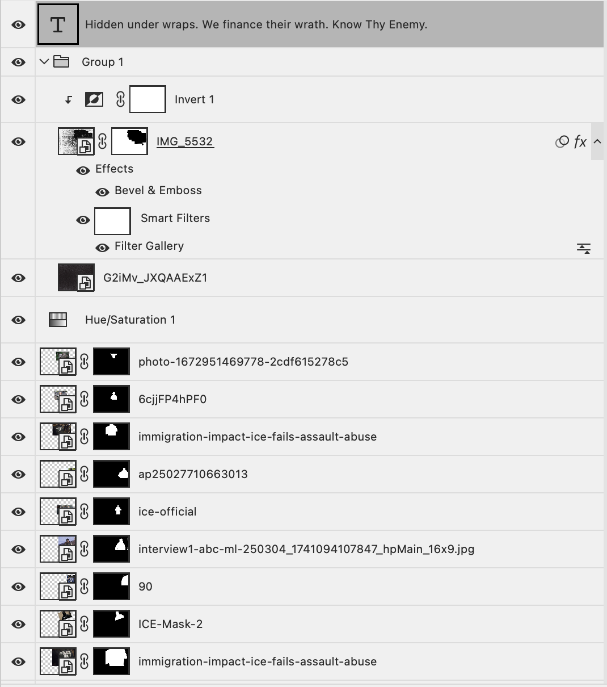
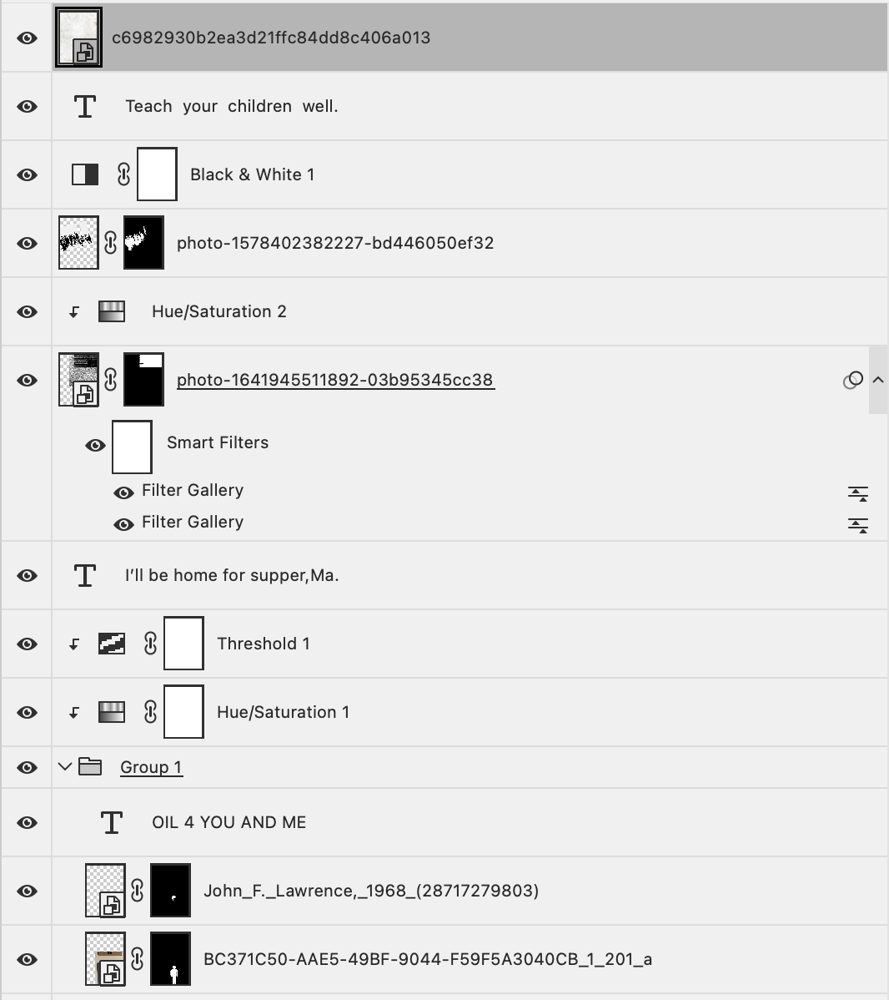

Screenshot:

Screenshot:
My first collage is titled, “Masks”, which showcases the cancer that is known as “ICE”. We see countless news articles exposing ICE for constantly abusing power, brutalizing many innocent people, and separating them from their families. So bold to showcase their power, yet so cowardly to not show their faces. Which is why I’ve hidden them behind a brick wall! Many of the images of ICE agents I came across were all facing backwards. There was one that I used that shows the face, but I’ve covered it with a pig head as a nod to the title given to cops, which is “PIG”. The one visible face seen is the Secretary of Homeland Security, Kristi Noem, who is actively supporting ICE. She’s a part of the problem, being a figure that decided to don the uniform of an ICE agent. We’re forced to pay our taxes every year, and we have no control over where it goes. Well, a chunk of it ends up in the hands of those that terrorize and harm. The wall was actually a shot that I took! There was a random chunk of bricks missing that showed a layer of drywall, so I created a mask to crop that out. I compiled the agents on top of each other, removing their backgrounds as well. I messed around with the filter gallery for the wall to give it a bit more texture. Eventually I tweaked with the saturation to create black and white images, and added a texture image overlaying the figures in the wall to give them a bit of a “newspaper-ish” look.
The second collage is titled “Teach Your Children Well”. The title actually came from a punk song, by a band known as Christ on Parade. In the song, they discuss the idea that America forces you to live a cookie cutter life of what it wants. You aren’t allowed to be unique or open your mouth, only to shut up and conform. The line “Teach your children well” highlights the need for parents to tell their children about the truth behind many things we are blind to in American society. Using this, I decided to create an anti-war ad. War is one of the many things that many people are blind to. I captured the pretty rugged stick figure from a men’s bathroom sign in Hunter College. I found a vintage war helmet, and inscribed on it “OIL 4 U AND ME” to showcase the real reason America goes to war. I’ve taken an image of an American flag and flipped it upside down to express extreme discontent with the country. We have some nice gentlemen saluting said flag, blindly I’d say. This represents the idea that people don’t truly know many of the horrors that many global leaders commit in these wars. The stick figure has a quote next to it, highlighting his/her innocence before going off to war. I went for the black and white route again. Messed with the threshold and filter gallery to give off a worn-in and tattered look for a lot of the images used.